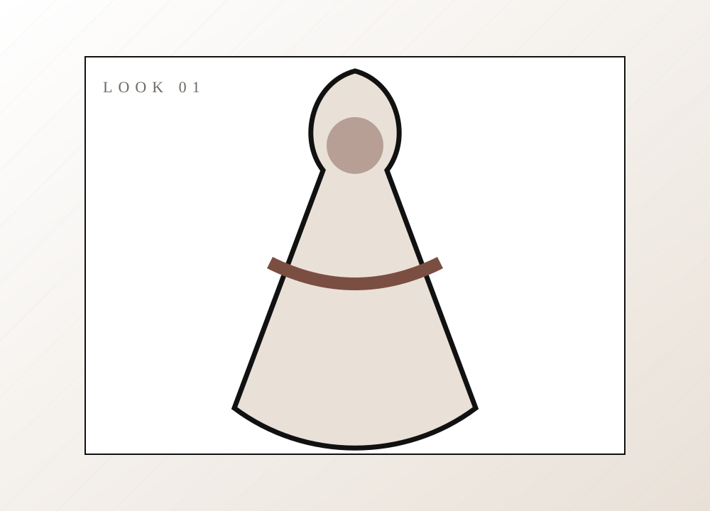
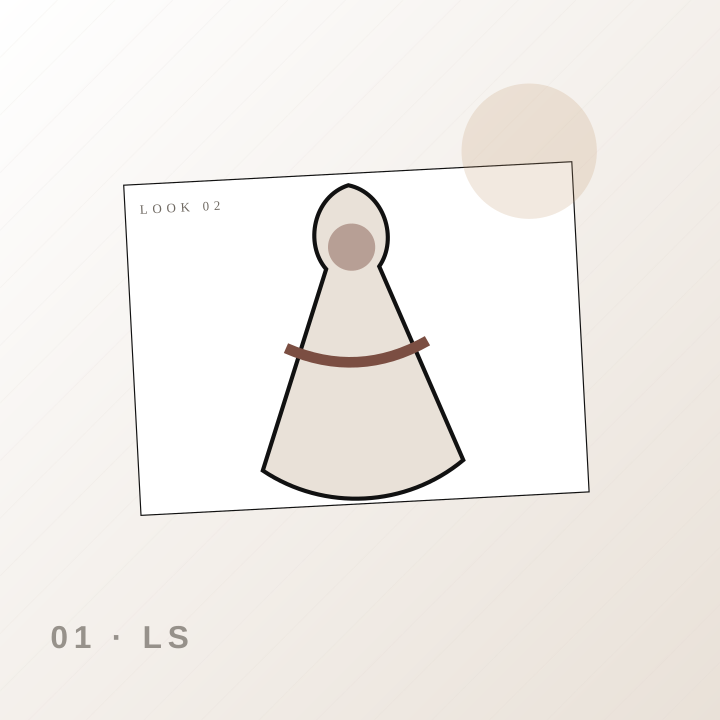
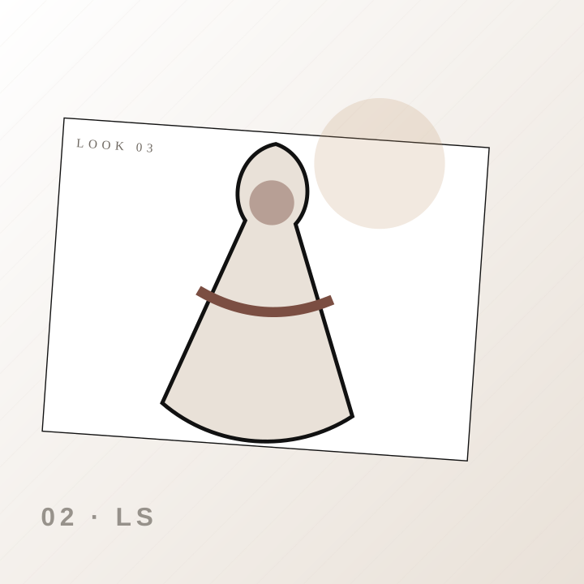
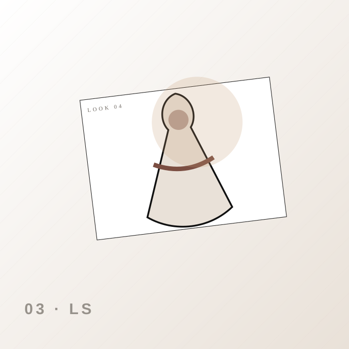

New in
Nuevas siluetas, texturas y colores de temporada.
Tienda de moda femenina con catálogo filtrable, fichas de producto, novedades, disponibilidad y contacto de compra.

LauStore es una tienda de ropa femenina que presenta vestidos y prendas casual chic, con tallas, colores, disponibilidad y una ruta simple para consultar o comprar por WhatsApp.
La arquitectura responde a la descripción del alumno, no a una plantilla genérica.
Nuevas siluetas, texturas y colores de temporada.
Opciones casuales, de oficina y para ocasiones especiales.
Combinaciones listas para inspirar la compra.
Ilustraciones vectoriales locales, rápidas y editables. No dependen de bancos externos.

Nuevas siluetas, texturas y colores de temporada.

Opciones casuales, de oficina y para ocasiones especiales.

Combinaciones listas para inspirar la compra.
Cada etapa define qué ocurre, qué recibe la persona y cuál es el siguiente paso.
Filtra por categoría, talla, color y precio.
Revisa fotografías, descripción y disponibilidad.
Envía el producto y variante deseada.
Coordina pago y envío nacional.
Contenido estructurado para personas, buscadores y motores de respuesta.
La ficha muestra una disponibilidad demostrativa; la confirmación final se realiza al momento de la consulta.
El formulario menciona transferencia porque fue el medio indicado. Los datos bancarios deben configurarse antes de publicar.
El brief indica envíos nacionales por Servientrega; costos y tiempos deben definirse según destino.
El diseño ya contempla contenido, navegación, accesibilidad, metadatos, respuestas directas y estructura técnica. Las integraciones reales se conectan con credenciales del negocio.